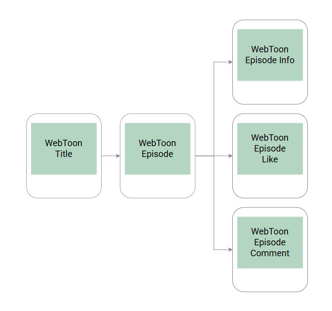
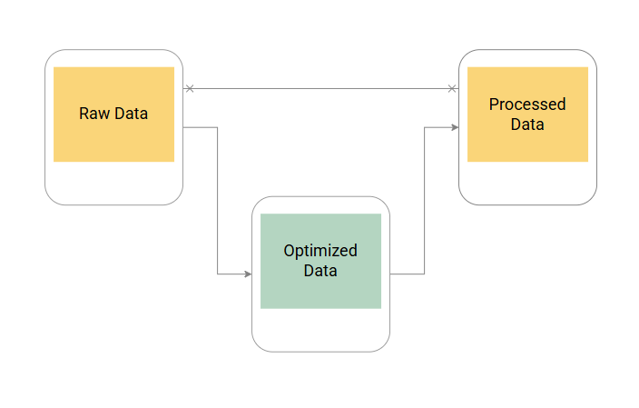
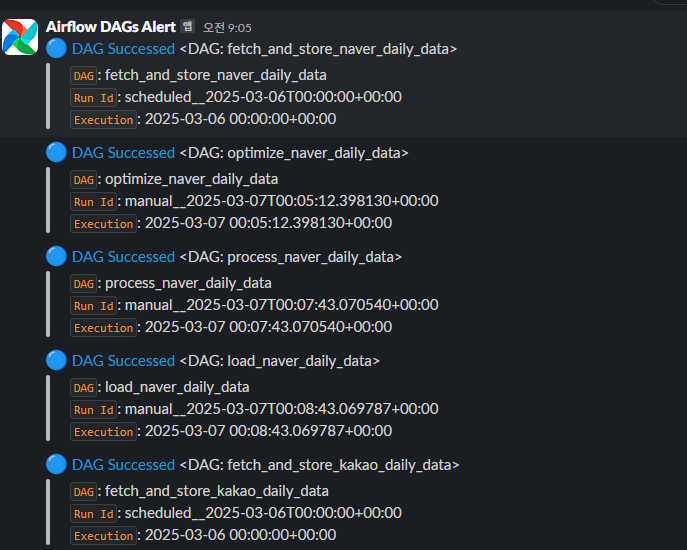
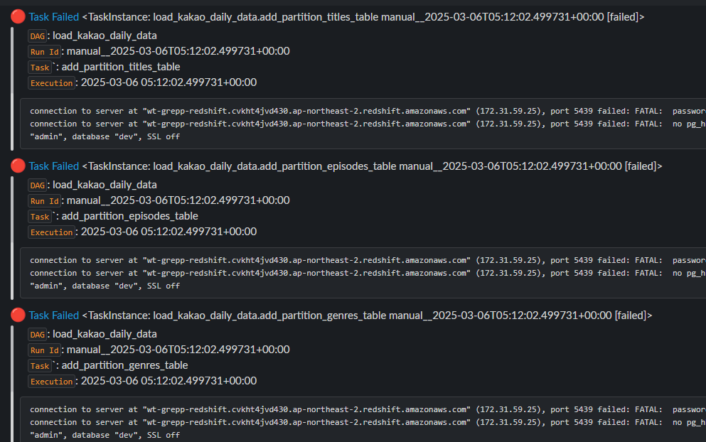
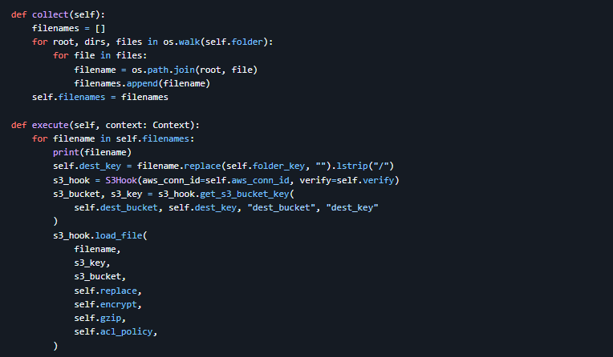
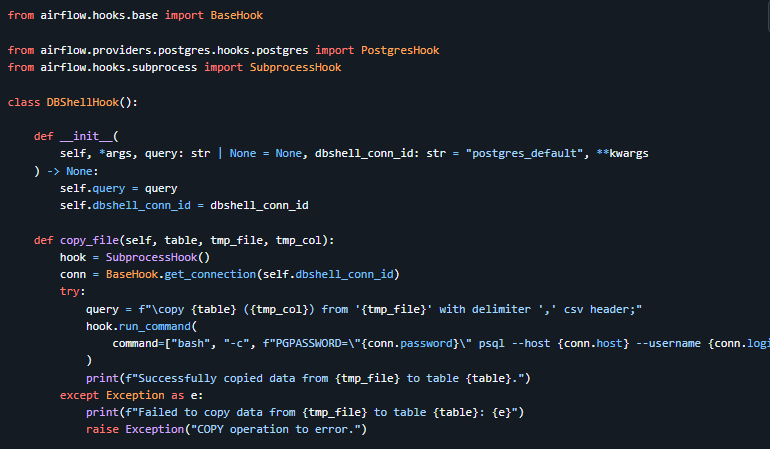
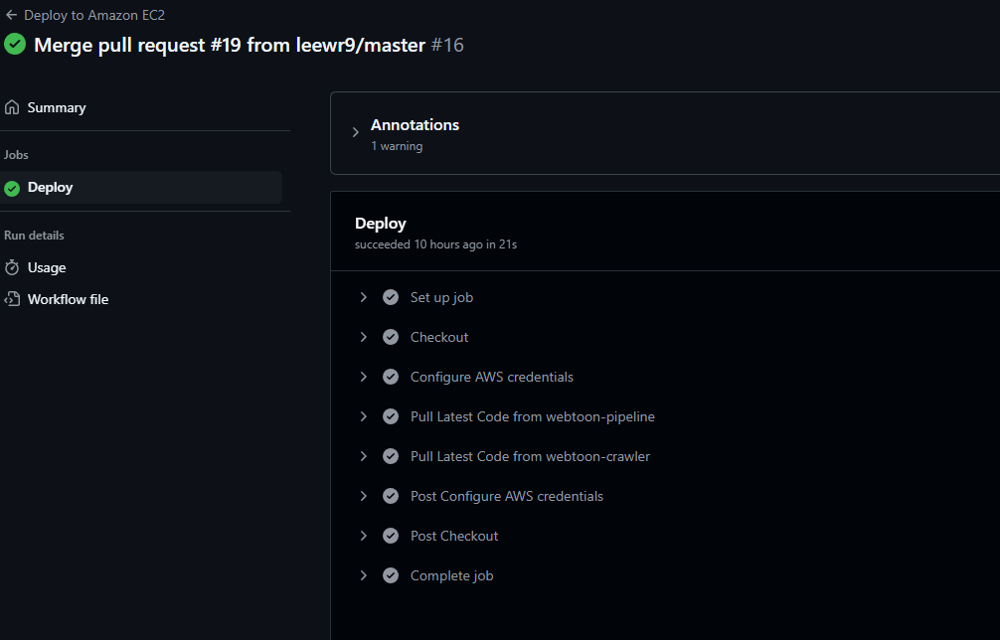
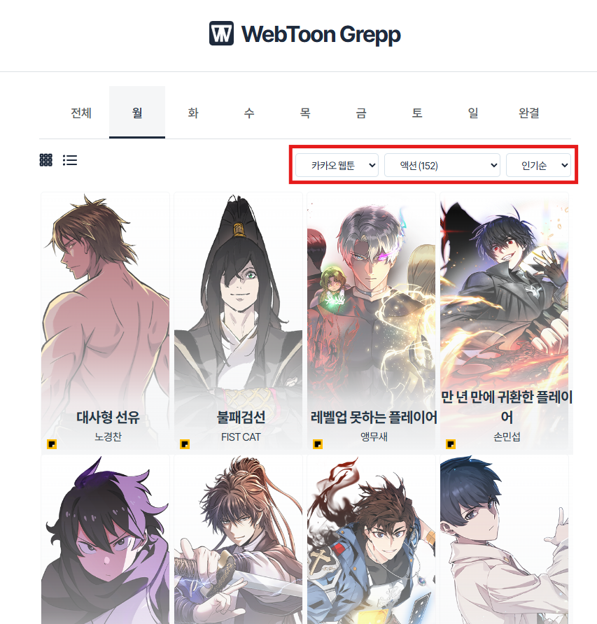

Java 웹 개발을 시작으로 게임 보안 솔루션 개발을 담당하며, 데이터 관리, 자동화, CI/CD, 시스템 최적화 경험을 쌓았습니다. 현재는 데이터 엔지니어링 분야로 전향하여 Python, Airflow, Spark 등의 기술을 심화 학습하며, 데이터 파이프라인 설계 및 클라우드 환경에서의 데이터 처리에 집중하고 있습니다.
[핵심역량]
- 데이터 엔지니어링 전반: 데이터 파이프라인 설계, 구축 및 운영 경험 보유
- 빅데이터 기술 스택: Python, Airflow, Spark 등을 활용한 실시간/배치 데이터 처리
- 자동화 및 최적화: CI/CD, 인프라 자동화, 성능 최적화 경험 보유
- 비즈니스 중심 데이터 활용: 데이터 기반 의사 결정 지원 및 비즈니스 가치 창출 역량
- 효율적인 협업 능력: 기획, 개발, 운영, 데이터 분석 등 다양한 직군과의 원활한 커뮤니케이션
- 개발 직무
-
빅데이터 엔지니어
서버/백엔드 개발자
- 기술 스택
-
Python
Airflow
Docker
PostgreSQL
dbt
Git
Apache Spark
Kafka
Google BigQuery
Amazon Redshift
C#
Java
프로젝트
WebToon Grepp
- 국내 웹툰 데이터를 크롤링하여 조회수, 별점, 댓글 수, 장르별 통계 등을 분석하는 프로젝트
- · 팀장
- · 2025.02 - 2025.03
- 1개월
기술 스택
-
Python
Airflow
Apache Spark
Amazon Redshift
Amazon S3
Amazon EC2
dbt
PostgreSQL
Flask
Gunicorn
NGINX
- 저장소 링크
-
· https://github.com/WebToon-Grepp
-
팀 구성 - 3명
상세 역할 - 데이터 엔지니어링 및 프로젝트 운영
카카오 웹툰 크롤링
· Python을 활용하여 카카오 웹툰 데이터 수집
· concurrent.futures를 활용하여 데이터 처리 병렬화
· 병렬 처리로 크롤링 속도 60% 개선
· 배운 점: 병렬 처리 기법을 통해 대규모 데이터를 효율적으로 처리하는 방법을 배웠습니다. 또한, 동시성 문제를 해결하기 위한 다양한 방법을 익히면서 크롤링 성능을 개선할 수 있었습니다.
데일리 데이터 ETL
· Apache Spark를 사용하여 일별 데이터 처리
· 데이터 처리 방식 변경: Pandas → Spark
· Pandas에서 발생한 메모리 부족 문제를 해결하고 Spark를 통해 분산 처리로 성능 개선
· 데이터 처리 구조 개선: raw → optimized → processed
· 데이터 흐름을 세 단계로 나누어 오류 대응 및 실행 시간 단축
· 배운 점: Spark를 사용한 분산 처리의 장점과 효율적인 메모리 관리를 배웠습니다. 또한, 데이터 흐름을 최적화하는 방법과, 대규모 데이터 처리에서 성능 개선의 중요성을 깨달았습니다.
데이터 파이프라인 관리
· Apache Airflow를 활용하여 데이터 파이프라인 자동화
· Slack 연동으로 DAG 알림 설정, 실시간 상태 모니터링
· 성공 
· 실패 
· Airflow 커스텀 Operator를 통해 S3 파일 업로드 시 폴더 단위로 처리하여 성능 최적화
· Airflow 커스텀 Hook을 구현하여 Redshift/PostgreSQL 데이터 처리 유연성 확보
· 배운 점: Apache Airflow의 유연성과 강력한 기능을 활용해 복잡한 데이터 파이프라인을 자동화하고 모니터링할 수 있었습니다. 커스텀 Operator와 Hook을 구현하면서 효율적인 데이터 처리 및 성능 최적화 방법을 배웠습니다.
AWS 리소스 관리
· EC2, S3, Redshift 등의 AWS 서비스 운영 및 관리
· AWS SSM과 GitHub Actions를 사용하여 EC2에 코드 배포 자동화
· SSH 없이 자동 배포 설정하여 코드 반영 프로세스 효율화
· 배운 점: AWS의 다양한 서비스를 사용하면서 클라우드 리소스를 관리하고 최적화하는 방법을 배웠습니다. 자동 배포 시스템을 구축하면서, 통합 및 배포(CI/CD)의 중요성을 깊이 이해하게 되었습니다.
홈페이지 제작
· Flask와 프로덕션 DB를 활용한 데이터 시각화 및 제공
· 배운 점: Flask를 사용하여 웹 애플리케이션을 구축하는 방법과, 실제 데이터베이스와 연동하여 실시간으로 데이터를 시각화하는 기술을 익혔습니다. 사용자 경험을 고려한 인터페이스 설계와 데이터의 효율적인 제공 방법을 배웠습니다.